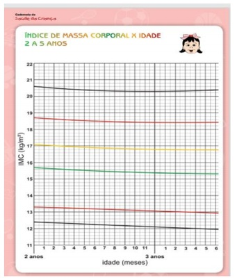

Assinale a alternativa correta a respeito da antibioticoprofilaxia cirúrgica.
Pacientes com esse transtorno se caracterizam por ter um distúrbio do humor crônico e utuante, com muitos períodos de hipomania e de depressão menor. Apresentam di culdades conjugais devido à natureza imprevisível de suas mudanças de humor e a irritabilidade acentuada. Também é comum, nesses pacientes, o abuso de álcool e outras substâncias. Assinale o diagnóstico que corretamente se relaciona com a descrição sintomatológica apresentada.
Os Transtornos de Personalidade (TP) são comuns e crônicos e ocorrem em 10 a 20% da população geral. Pessoas com TP apresentam uma propensão muito maior a recusar auxílio psiquiátrico e negam seus problemas. Dentre os TP, um se caracteriza por usar a aparência física para atrair a atenção para si, apresentar um padrão difuso de emocionalidade, buscar a atenção em excesso, possuir um estilo de discurso que é excessivamente impressionista e carente de detalhes e considerar as pessoas mais íntimas do que na realidade o são. Assinale a seguir a qual Transtorno de Personalidade se refere essa descrição.
Usuários com doenças psiquiátricas crônicas e refratárias deveriam ser direcionados, para acompanhamento, aos Centros de Atenção Psicossocial (CAPS), reservando os demais casos para os níveis de Atenção Primária e Secundária. Muitos desses usuários dos CAPS apresentam diagnóstico de Esquizofrenia. Dentre os psicofármacos listados abaixo, assinale o mais eficaz para pacientes com esse diagnóstico e que não responderam aos fármacos habituais.
Dados vêm demostrando que, já durante esse período da pandemia da COVID-19, a incidência de transtornos psiquiátricos tem aumentado. Além disso, espera-se a denominada “quarta onda”, período pós-pandemia caracterizado por um aumento desses transtornos, provocado pelas mudanças bruscas, pelo medo, pelas perdas nanceiras e pelo distanciamento físico e isolamento social, o que irá gerar consequências sobre a saúde mental da sociedade como um todo. Dentre os sintomas mais comuns nesse momento, os de ansiedade são dos mais relatados. Sobre os Transtornos de Ansiedade, pode-se corretamente afirmar que:
Paciente apresenta movimentos musculares súbitos, de curta duração (< 100ms), bruscos, semelhantes a choque, que acontecem em descargas musculares únicas ou repetitivas. Como se descreve esses movimentos?
Sobre o envelhecimento e as condições crônicas, analise as assertivas abaixo: I. A multimorbidade está fortemente associada à incapacidade/de ciência, com um aumento gradual na proporção de indivíduos que relataram dificuldade nas atividades da vida diária de acordo com seu número de condições médicas. II. As condições crônicas de saúde mais comuns são doenças cardíacas, hipertensão e artrite. III. A expectativa de vida dos idosos é a melhor medida para avaliar essa população. É importante que não se use a “expectativa de vida saudável”, conforme definido pela Organização Mundial da Saúde. Quais estão corretas?
Homem branco, 64 anos, diabético tipo 2, com diagnóstico aos 60 anos. Aderente às medidas de modi cação de estilo de vida, com controle dietético adequado e caminhadas diárias de 1h. Em uso de metformina 2g por dia. Mantém acompanhamento regular na ESF a cada 4 meses. Devido à pandemia viral, optou por adiar sua consulta de retorno, visto estar assintomático e compensado do ponto de vista glicêmico na última consulta. Com o início do tele atendimento pela médica da ESF, procura atendimento por micções frequentes e urina escura. Mostra-se preocupado, pois seu vizinho lhe avisou que o quadro seria motivo para uso de insulina. Ao ser questionado, informa desconforto para urinar. Afebril, normotenso e glicemia capilar pós-prandial do café da manhã de 245 mg/dL, medida em sua casa. Mostra o resultado dos exames solicitados na última consulta há 5 meses para retorno de controle: glicemia de jejum=182 mg/dL; HbA1C=8,4%; creatinina=1,4 mg/dL (taxa de ltração glomerular CKD-EPI=53 mL/min/1.73m² ); exame Qualitativo de Urina (EQU) com presença de esterase leucocitária, glicosúria, hematúria e leucocitúria. Entre as alternativas abaixo, assinale a que contenha hipótese diagnóstica e análise mais apropriada dos exames citados.
Mulher, 48 anos, comparece para pronto atendimento na unidade básica de saúde por intensi cação e irradiação da dor para a pelve. Informa atividade física regular, tendo feito treino com exercícios aeróbicos e musculação na manhã do dia anterior. No nal da tarde, apresentou desconforto em topogra a de rim esquerdo, o qual associou com contratura muscular devido ao treino. Observou urina com tonalidade mais forte que o habitual. É diabética, hipertensa e dislipidêmica com diagnóstico há dois anos por ocasião de internação por pielonefrite. Tem ciclos menstruais regulares. Nega uso de medicação anti-inflamatória ou analgésica. Ao exame físico, apresenta-se afebril; sem dor a punho percussão; dolorimento à compressão profunda de anco esquerdo; sem visceromegalias ou massas palpáveis; sinais de Blumberg e Lasegue negativos. Qual a hipótese diagnóstica mais provável?
Mulher, 80 anos, branca, em acompanhamento na Unidade Básica de Saúde. Tem hipertensão arterial sistêmica em uso correto de quatro medicações anti-hipertensivas, sendo uma delas betabloqueador. Traz cartão de controle da pressão com registro de valores pressóricos domiciliares sustentadamente elevados. Nega taquicardia. Nega dor abdominal ou sintomas gastrintestinais. Hábito intestinal preservado. No exame físico, apresenta-se afebril; PA=220/180 mmHg, confirmada; FC=95; ritmo regular. Traz exames solicitados na consulta anterior: glicemia de jejum=112 mg/dL; HbA1C=6,1%; T4 superior a 30; TSH=0,93 (0,38-5,33); creatinina=0,9mg/dL (0,5 a 1,1); taxa de ltração glomerular CKD-EPI=60 mL/min/1,73m²; transaminases dentro da faixa de referência. Qual a hipótese diagnóstica mais provável?
Na visita domiciliar, recomendam-se, para as equipes de saúde, estratégias para o encontro com a família e a realização da entrevista familiar. Analise as assertivas abaixo e assinale V, se verdadeiras, ou F, se falsas. ( ) Mantenham uma boa comunicação entre os familiares e entre a família e a equipe. ( ) Explicitem a história da doença e do significado dela na família. ( ) Mantenham uma presença empática com a família. A ordem correta de preenchimento dos parênteses, de cima para baixo, é:
_____________ de tabagismo é o resultado da iniciação (novos usuários de tabaco) e da interrupção do consumo (por cessação do tabagismo ou morte). A identi cação dos fatores determinantes da iniciação e da cessação do tabagismo é, portanto, fundamental para o planejamento de ações específicas para o controle do tabaco. Assinale a alternativa que preenche corretamente a lacuna do trecho acima.
Na história da organização do Sistema de Saúde Brasileiro, qual foi o grande avanço no tocante à participação das pessoas nas decisões deliberativas do SUS?
Sob determinadas condições, em um ensaio clínico randomizado para comparação dos efeitos de dois tratamentos em dois grupos de pacientes independentes, qual é o teste poderoso para estudar a associação de uma variável binária com uma variável quantitativa?
Um dos kits de teste rápido (2019-nCOV IgG/IgM) apresenta especi cidade relativa para IgG: 287/289 = 99,31% (IC 95%: 97,52% -99,92%). Sobre esses achados, analise as assertivas abaixo: I. A coleta, transporte e processamento de amostras não razoáveis podem levar a resultados falsospositivos do teste rápido, entretanto não interferem na especificidade. II. A alta especificidade pode recomendar o uso do teste nas situações indicadas. III. Foram positivos 2 (falsos-positivos) resultados em comparação ao exame padrão (RT-PCR). Quais estão corretas?
O planejamento em saúde é um auxiliar fundamental da tomada de decisão, permitindo a racionalização dos recursos de saúde com equidade e e ciência e esses aspectos também são importantes para a operacionalização das iniciativas de promoção da saúde. Considerando esses aspectos, assinale a alternativa INCORRETA.
Sobre o Método Clínico Centrado na Pessoa, assinale a alternativa INCORRETA.
Sobre o regramento deontológico médico, analise as assertivas abaixo e assinale V, se verdadeiras, ou F, se falsas. ( ) A m de garantir o acatamento e a cabal execução do Código de Ética Médica (CEM), o médico comunicará ao Conselho Regional de Medicina, com discrição e fundamento, fatos de que tenha conhecimento e que caracterizem possível infração do presente Código e das demais normas que regulam o exercício da Medicina. ( ) Para atender uma necessidade natural e permanente de aperfeiçoamento, a revisão do Código de Ética Médica é feita periodicamente sob o prisma de zelo pelos princípios deontológicos da Medicina, sendo um dos mais importantes o absoluto respeito ao ser humano, com a atuação em prol da saúde dos indivíduos e da coletividade, sem discriminações. ( ) O CEM define a responsabilidade do médico assistente, ou seu substituto, ao elaborar e entregar o sumário de alta e prevê a isonomia de tratamento aos profissionais com deficiência e reforça a necessidade de criação de comissões de ética nos locais de trabalho. A ordem correta de preenchimento dos parênteses, de cima para baixo, é:
No sistema de saúde, o nível denominado Atenção Primária à Saúde (APS) pode ser definido de acordo com os itens a seguir, EXCETO:
Mulher, 76 anos, com diagnóstico de câncer de pulmão com metástases ósseas e hepáticas. É independente para atividades de vida diária, mora com a lha de 45 anos e neta de 21 anos. Durante a primeira consulta ambulatorial, acompanhada da lha, refere que gostaria de morrer em casa e está preocupada se isso é possível e como irá controlar a dispneia e as dores. Em relação ao caso relatado, assinale a alternativa INCORRETA.
Ao se estudar a febre entre as “Apresentações Comuns no Paciente”, pode-se inferir que todas as informações abaixo estão corretas, EXCETO:
Paciente com 14 anos estava fazendo uma trilha em local de mata nativa e foi picado no tornozelo direito. Apresentou imediata e significativa dor local, com edema que rapidamente progrediu pela perna e, após 1 hora, atingiu a coxa, di cultando a deambulação. Apresentou equimoses e pequenas bolhas de conteúdo seroso no local da picada e não foi observada qualquer manifestação neurológica. Essa apresentação clínica caracteriza um acidente:
Considerando um paciente com 10 anos, qual a principal medida terapêutica a m de controlar o edema causado por síndrome nefrótica?
Paciente com 10 meses apresenta febre de 39°C há 24 horas, acompanhada de náuseas e recusa alimentar. Na consulta do pronto atendimento, verifica-se que seus sinais vitais estão normais, com saturação de oxigênio de 97% em ar ambiente. Ao exame físico, está com conjuntivas levemente hiperemiadas, coriza hialina e várias úlceras e erosões em mucosa oral. No tórax, abdome e nas mãos, há algumas lesões papulares e eritematosas. A conduta indicada para esse paciente é:
Paciente com 8 meses é atendido na Unidade Básica de Saúde por recusa alimentar, prostração, febrícula persistente e estridor respiratório. Tem calendário vacinal atualizado. A principal hipótese diagnóstica para esse caso é de traqueíte bacteriana aguda e, para definir condutas, devese considerar que o mais frequente agente etiológico entre os microrganismos abaixo é:
Menino de 4 anos é levado ao Pronto Atendimento Pediátrico por edema e eritema palpebral à direita. Enxerga bem, movimenta sem problemas o globo ocular e não tem proptose. A mãe refere que está há 10 dias com sintomas gripais, sem tratamento. A impressão diagnóstica é de:
Analise as características abaixo, verificando se se enquadram no diagnóstico de trissomia do cromossomo 21: I. Macroglossia. II. Macrognatia. III. Implantação baixa de orelhas. IV. Prega plantar transversa. Quais estão corretas?
Qual das seguintes alternativas é a forma mais comum de convulsão infantil?
Menino 13 anos está com febre e dor na garganta. Ao exame, tem exantema maculopapular em tronco, adenomegalia cervical e esplenomegalia. Qual é a suspeita diagnóstica inicial?
A mãe de um recém-nascido a termo de dez dias de vida, em aleitamento materno exclusivo, vai à consulta com clínico porque naquele dia apareceram na pele da mãe algumas lesões vesiculopapulares. Após anamnese e exame clínico, chega- se ao diagnóstico de varicela na puérpera. O neonato está assintomático e em bom estado geral. A conduta adequada a ser adotada em relação ao recém-nascido será:
Uma puérpera se queixa a você que não está conseguindo amamentar efetivamente seu primeiro lho, atualmente com três dias de vida. Relata que ele chora muito, larga o peito frequentemente e que não sente a mama esvaziar após a mamada. O recém-nascido perdeu 12% do peso desde o nascimento. Na observação da mamada, você repara que as mamas estão cheias, com aréola tensa, que as bochechas do bebê cam encovadas e a mãe sente muita dor. Mamilos estão íntegros. A melhor orientação que você pode dar é:
Recém-nascido de parto vaginal a fórceps apresenta reflexo de Moro assimétrico no primeiro dia de vida, com pouco movimento do braço esquerdo, que ca mantido em rotação interna ao lado do corpo com o antebraço estendido e em pronação. O restante do exame físico é normal, inclusive a preensão palmar da mãe esquerda. O provável diagnóstico é:
Revisar: possível letra faltando em enunciado
Um recém-nascido a termo, com 25 horas de vida, é submetido ao teste do coraçãozinho (teste de oximetria), obtendo o seguinte resultado: membro superior direito 100% e membro inferior esquerdo 96%. A conduta que deve ser tomada nessa situação é:
Em relação à introdução da alimentação complementar ao aleitamento materno, aos seis meses de idade, está correto afirmar que:
Menina de 3 anos e 4 meses de idade apresenta peso de 18 Kg e altura de 100 cm. Utilizando o gráfico abaixo, conforme as recomendações da Caderneta de Saúde da Criança do Ministério da Saúde, classificamos essa criança como apresentando:

São critérios necessários para o diagnóstico de PICA (alimentação de substâncias não nutritivas e não alimentares): I. Ocorrer a alimentação de substâncias não nutritivas e não alimentares persistente durante um período de, pelo menos, um mês. II. Presença de comportamento alimentar inadequado para o nível de desenvolvimento, sendo sugerida uma idade mínima de 2 anos. III. Associação com deficiência dos micronutrientes ferro e zinco. Quais estão corretos?
Na avaliação do desenvolvimento, conforme a Caderneta de Saúde da Criança do Ministério da Saúde, crianças que apresentam ausência de um ou mais marcos para sua faixa etária, ou então, ausência de dois ou mais marcos para a faixa etária anterior são, respectivamente, classificadas como:
Em relação à escabiose na infância, analise as seguintes assertivas: I. O início da doença é insidioso, ocorrendo o aparecimento de lesões papulovesiculares eritematosas e pruriginosas e acompanhadas de prurido principalmente noturno. II. Em lactentes, as lesões podem ser mais disseminadas, incluindo palma das mãos e planta dos pés. III. O prurido cessa em 24-48 horas após a instituição do tratamento, sendo indicativo de falha terapêutica se persistir após 72 horas. Quais estão corretas?
Os estágios G2, G3 e G4 de Tanner para meninos são marcados, respectivamente, por:
Durante o ano de 2020, a pandemia da COVID-19, causada pelo vírus SARS-COV-2, levou grande parte da população a uma situação de importante distanciamento físico e isolamento social. Crianças e adolescentes vivenciaram esse período de uma forma bastante intensa, sofrendo pela ausência de contato com seus amigos, colegas de escola e mesmo seus avós. Muitas crianças e adolescentes sofrem e sofrerão o impacto psicológico desse difícil período, alguns chegando a apresentar claros quadros depressivos. A respeito do Transtorno Depressivo nessa faixa etária, é correto afirmar que:
Menino de 8 anos é trazido à consulta pelos pais. Ambos referem que o lho está “sempre agitado”, que é incapaz de brincar calmamente, que com frequência fala demais e interrompe os outros, apresentando muita di culdade em esperar a sua vez (por exemplo, em uma la). Além disso, evita ou reluta em se envolver em atividades que exijam esforço mental, é bastante desorganizado nas suas tarefas diárias e repetidamente perde coisas (seu material escolar, seus óculos, entre outros). O menino confirma as informações trazidas pelos pais. Em função dessa sintomatologia, você realiza o diagnóstico de Transtorno de Dé cit de Atenção/Hiperatividade (TDAH) subtipo combinado e indica tratamento psicoterápico e farmacológico. Sobre o tratamento farmacológico do TDAH em crianças, é correto afirmar que:
O Transtorno Disfórico Pré-Menstrual (TDPM) é desencadeado pela oscilação dos níveis de esteroides sexuais que acompanham um ciclo menstrual ovulatório. Apesar de até 80% das mulheres sentirem alguma alteração de humor, no sono ou de sintomas somáticos no período prémenstrual, apenas 3 a 7% têm, de fato, sintomas que satisfazem os critérios diagnósticos para TDPM. Assinale a alternativa que corretamente faz parte dos critérios do DSM-5 para esse transtorno.
Durante o atual período da pandemia da COVID-19, muitas mudanças ocorreram na vida das pessoas ao redor do mundo. Como resultado desse momento, existem dados mostrando, por exemplo, aumento na incidência de abuso de álcool e outras substâncias, de transtornos ansiosos e depressivos, e da violência doméstica. Infelizmente, a violência contra a mulher já era um problema bastante comum antes mesmo da pandemia. Sobre como proceder durante uma consulta médica com mulheres suspeitas de terem sofrido esse tipo de agressão, assinale a alternativa INCORRETA.
A bexiga hiperativa é uma síndrome que se caracteriza pela urgência miccional (não siológica), usualmente acompanhada de aumento da frequência urinária e de noctúria, na ausência de fatores infecciosos, metabólicos ou locais, podendo estar associada à perda involuntária de urina. Sobre essa síndrome, é correto afirmar que:
Analise as assertivas abaixo e assinale V, se verdadeiras, ou F, se falsas. ( ) O uso de ácido valproico não altera a concentração sanguínea do anticoncepcional oral. ( ) O uso do topiramato diminui a concentração sanguínea do anticoncepcional oral. ( ) Quando o metronidazol oral é prescrito para usuárias de anticoncepcional oral combinado, devese orientar uso de condom pelo risco aumentado de gestação. ( ) O uso de anticoncepcional oral de baixa dosagem está associado ao baixo risco absoluto de doença cardiovascular em mulheres saudáveis. A ordem correta de preenchimento dos parênteses, de cima para baixo, é:
Analise as assertivas abaixo e assinale V, se verdadeiras, ou F, se falsas, em relação à falência ovariana prematura. ( ) Pacientes com falência ovariana prematura e menos de 30 anos devem fazer cariótipo para descartar mosaicismos. ( ) É definida quando a falência ovariana ocorre antes dos 45 anos. ( ) Pode ser transitória ou definitiva. ( ) As mulheres com síndrome dos ovários resistentes às gonadotro nas podem apresentar amenorreia primária ou secundária. A ordem correta de preenchimento dos parênteses, de cima para baixo, é:
Quanto ao rastreamento do câncer de mama, analise as assertivas abaixo: I. A mamografia é o padrão-ouro, sua sensibilidade geralmente aumenta com a idade, assim como a incidência de câncer. II. Os cânceres de mama de crescimento lento podem ser identi cados por mamogra a pelo menos 2 anos antes que a massa atinja um tamanho detectável por palpação. III. No Brasil, não se recomenda a realização da mamogra a em mulheres abaixo de 40 anos, exceto, de forma individualizada, em mulheres com alto risco para câncer de mama. IV. Para Mulheres entre 40 e 69 anos, recomenda-se a realização da mamogra a para todas as mulheres, com periodicidade anual, conforme a Sociedade Brasileira de Mastologia. Quais estão corretas?
O Sangramento Uterino Anormal (SUA) é motivo importante de consultas ginecológicas e pode ser causado por etiologias diversas. São causas comuns de SUA, EXCETO:
As úlceras genitais femininas são lesões nas quais há perda de tecido epitelial com envolvimento da epiderme e, às vezes, da derme, podendo ser localizadas na vulva e/ou vagina e/ou colo uterino. Em relação às úlceras genitais e às doenças que podem estar relacionadas a ela, assinale a alternativa INCORRETA.
A exposição prolongada aos estrogênios sem a oposição dos progestogênios é o principal fator de risco para a hiperplasia endometrial e para o câncer de endométrio. Desconsiderando as situações de uso clínico de estrogênios exógenos, essa situação ocorre mais comumente em duas circunstâncias: _____________ na pré-menopausa e ____________ na pós- menopausa. Assinale a alternativa que preenche, correta e respectivamente, as lacunas do trecho acima.
A irrigação do útero provém principalmente da artéria uterina, que é ramo:
Alguns transtornos psiquiátricos ocorrem no período pós-parto com importante impacto sobre a mulher, o bebê e pessoas próximas. Assinale a alternativa que corretamente descreve um desses transtornos.
Não existem respostas definitivas sobre quais medicamentos são os mais seguros durante a gestação e lactação. A Food and Drug Administration (FDA), agência norte-americana, classifica os fármacos em cinco categorias de risco para o uso durante a gravidez. Relacione a Coluna 1 à Coluna 2, associando os exemplos de fármacos às categorias com sua definição. Coluna 1 1. Ácido valproico. 2. Acetaminofeno. 3. Aspirina. 4. Lítio. 5. Ferro. Coluna 2 ( ) Categoria A: ausência de risco para o feto em estudos controlados com seres humanos. ( ) Categoria B: ausência de risco para o feto em estudos com animais, mas sem estudos controlados para seres humanos, ou risco para o feto em animais, sem risco em estudos bem controlados com seres humanos. ( ) Categoria C: efeitos adversos para o feto em animais; sem disponibilidade de dados para seres humanos. ( ) Categoria D: risco observado para fetos humanos (pode ser usado em situação potencialmente letal). ( ) Categoria X: risco comprovado para fetos humanos (sem indicação para uso, mesmo em situações potencialmente letais). A ordem correta de preenchimento dos parênteses, de cima para baixo, é:
Em relação às Doenças Trofoblásticas Gestacionais (DTG), analise as seguintes assertivas: I. As DTG são eventos patológicos relacionados a erros de fertilização. II. Na mola hidatiforme parcial, é possível encontrar macroscopicamente embrião e membrana amniótica. III. São consideradas complicações possíveis: pré-eclâmpsia, hipotireoidismo, anemia e hiperêmese gravídica. IV. A aspiração a vácuo é o principal método de esvaziamento uterino nas gestações molares. Quais estão corretas?
Em relação à gestação gemelar, analise as assertivas abaixo: I. A mortalidade fetal e neonatal está aumentada, assim como há maior risco de paralisia cerebral quando comparadas à gestação única. II. A morbidade e a mortalidade materna são elevadas na gravidez gemelar. III. A probabilidade de gestação gemelar diminui com a idade materna. Quais estão corretas?
Em relação à apresentação pélvica, analise as assertivas abaixo: I. Fetos pélvicos apresentam uma mortalidade perinatal mais elevada que os fetos cefálicos, mesmo quando nascidos de cesariana. II. A prematuridade e as malformações fetais aumentam a incidência de apresentação pélvica no momento do parto. III. Primigestação, fetos grandes e prematuridade extrema são indicações de cesariana nas apresentações pélvicas. Quais estão corretas?
Durante o trabalho de parto, o preceptor faz um toque vaginal na paciente e diz ao residente que o feto está em OET. Essa nomenclatura obstétrica permite descrever as relações entre o feto e a gestante e, nesse caso, a letra T faz referência à:
Quais os fatores de risco mais importantes para o descolamento prematuro de placenta (DPP)?
Em relação às modificações fisiológicas da gestação no sistema respiratório, podemos dizer que:
Diante da suspeita, pela história clínica, de ruptura prematura de membranas, os exames adicionais que podem auxiliar na confirmação do diagnóstico são, EXCETO:
Na primeira consulta de pré-natal, com 11 semanas de gestação, gestante apresenta seus exames de rotina com uma glicemia de jejum de 93 mg/dl. Segundo a Organização Mundial de Saúde, a Federação Internacional de Ginecologia e Obstetrícia, e a
A síndrome da compressão torácica ou do desfiladeiro torácico se caracteriza por compressão de:
Paciente com quadro de diverticulite aguda, classificação Hinchey I, coleção de 6 cm, bom estado geral, previamente hígido. A melhor conduta é:
Durante a avaliação de um paciente jovem com dor em fossa ilíaca direita, são sinais clínicos que nos levarão à suspeita de apendicite aguda, EXCETO:
A pseudo-obstrução é uma síndrome clínica caracterizada por sintomas recorrentes de obstrução intestinal sem obstáculo mecânico. São causas de pseudo-obstrução intestinal, EXCETO:
O agente etiológico mais comum de epididimite no adulto jovem hígido é:
Um paciente vítima de ferimento corto-contuso por arma branca em região lombar direita alta será melhor avaliado quanto à possibilidade de lesões viscerais por meio de:
São condutas aceitas no paciente vítima de trauma com hemopericardio e tamponamento cardíaco, EXCETO:
A icterícia obstrutiva tem como diagnóstico diferencial doenças benignas e malignas das vias biliares. Sobre essa condição, é correto afirmar que:
Na anatomia do arco aórtico, qual a sequência mais comum dos vasos da base (da porção proximal para distal)?
Imagens de massa no mediastino anterior podem ser encontradas em:
A apendicite aguda NÃO está relacionada com:
Em relação à hernioplastia inguinal, assinale a alternativa INCORRETA.
Assinale a alternativa correta a respeito do pós-operatório de pacientes submetidos à cirurgia bariátrica.
Assinale a alternativa correta a respeito da dosagem sérica do Peptídeo C.
A respeito da reação metabólica ao trauma cirúrgico, assinale a alternativa INCORRETA.
Você está em um plantão como residente de cirurgia geral e recebe um paciente com os seguintes achados: abertura ocular ao comando de voz, resposta verbal confusa e, ao estímulo, localiza a dor. A pontuação da escala de coma de Glasgow é igual a:
São fatores de risco para complicação pulmonar pós-operatória:
A arcada de Riolan faz parte da vascularização do intestino grosso e é composta pela ligação entre dois vasos. São eles:
O divertículo de Meckel está localizado:
Um jovem de 21 anos vem à consulta com queixas vagas e inespecí cas. Ao longo do atendimento, ele lhe conta que está com muito receio de apresentar o seu Trabalho de Conclusão de Curso (TCC) e que está pensando, inclusive, em desistir de fazê-lo, tal o grau incapacitante de ansiedade que sente. Você, então, decide prescrever propranolol para essa fobia de desempenho. Assinale, dos efeitos adversos abaixo, aquele que NÃO se relaciona com esse medicamento.
Revisar: possível letra faltando em enunciado
Durante o seu plantão, você é chamado para avaliar um paciente que havia sido internado há poucas horas na Enfermaria de Medicina Interna para elucidação diagnóstica. Ao chegar à enfermaria, a Equipe de Enfermagem lhe conta que o paciente iniciou com um quadro confusional agudo. Os exames laboratoriais mostram hiponatremia. Nesse sentido, assinale a alternativa que apresenta uma causa de hiponatremia que pode levar a um quadro confusional agudo.
Você está de plantão em um pronto-socorro e é chamado para atender um paciente adulto que apresenta um episódio agudo de medo intenso, taquicardia, sudorese, sensação de falta de ar, desconforto torácico e abdominal, sensação de tontura, calafrios e ondas de calor, medo de enlouquecer e de morrer. A sua primeira hipótese diagnóstica é a de um ataque de pânico. No entanto, você sabe que é necessário ser feito um diagnóstico diferencial de uma causa orgânica para essa sintomatologia. Sendo assim, qual das condições abaixo NÃO é um diagnóstico diferencial para um ataque de pânico?
Homem, afrodescendente, 70 anos, viúvo. É portador de um quadro de Hipertensão Arterial Sistêmica, atualmente controlado pelo uso de um inibidor dos receptores de angiotensina II associado a um diurético tiazídico. Apresenta eventuais episódios de arritmia, demonstrados por um intervalo QT longo no seu último eletrocardiograma. Além disso, tem histórico de úlcera gástrica e, por isso, faz uso de cimetidina; também apresenta alterações nos exames de função hepática. Na consulta, conta que, em função da pandemia da COVID-19, permaneceu, desde março, completamente sozinho em casa, apenas tendo contato, por via remota, com seus familiares. Aos poucos, foi se sentido cada vez mais triste, desanimado, sem perspectiva, pensando que não vale mais a pena viver, sem prazer no seu cotidiano, insone, inapetente (tendo perdido 6 kg nos últimos três meses), se culpando por muitas condutas tomadas ao longo de sua vida e com uma preocupação extrema de se manter nanceiramente (o que não condiz com sua realidade). Essa sintomatologia já dura cerca de três meses e, aplicando uma escala que avalia depressão, o quadro é classificado como grave. Assinale a alternativa que apresenta o antidepressivo mais indicado para esse caso.
Homem de 35 anos vem à consulta por pirose e regurgitação com frequência. Nega tabagismo ou emagrecimento. Qual a conduta inicial?
Paciente de 45 anos, ictérico e com ascite moderada, é trazido ao pronto-socorro por estar apresentando vômitos em borra de café e fezes pretas há 8 horas. Qual a conduta inicial?
Em relação à Medicina Transfusional, é INCORRETO afirmar que:
Homem, 68 anos, hipertenso, diabético e portador de brilação atrial permanente, em uso prévio de Enalapril, Anlodipina e Varfarina, é trazido ao pronto-socorro por um quadro de redução do sensório, disfasia e hemiparesia proporcionada à esquerda de inicio há 1 hora. A Tomogra a Computadorizada de Crânio revelou pequenas áreas crônicas de infarto lacunar, mas sem alterações agudas. Qual das alternativas abaixo é a correta?
Assinale a alternativa que apresenta Doença Renal Crônica mais comumente associada à Hepatite C.
Assinale a etiologia mais comum de Injúria Renal Aguda, que afeta 40-80% dos pacientes.
Quanto ao Diabetes Mellitus (DM), é INCORRETO afirmar que:
Mulher recebeu diagnóstico de tireotoxicose. São sinais e sintomas que contribuíram para o diagnóstico clínico: I. Aumento de apetite. II. Pele fria e descamativa. III. Intolerância ao calor. IV. Bócio difuso com superfície nodulosa e consistência aumentada. V. Edema pré-tibial. Quais estão corretas?
Em relação ao hipotireoidismo primário, é INCORRETO afirmar que:
A Doença Pulmonar Obstrutiva Crônica (DPOC) é definida pela presença de sintomas respiratórios persistentes e limitação ao uxo aéreo não totalmente reversível. São tratamentos recomendados em algum momento do desenvolvimento da doença: I. Cessação do tabagismo, reabilitação pulmonar, farmacoterapia com broncodilatadores. II. Métodos para redução de volume pulmonar – cirúrgica ou endoscópica. III. Uso de azitromicina diária em exacerbadores frequentes. Quais estão corretas?
Paciente de 20 anos, portador de asma brônquica, vem à consulta médica referindo tosse seca diurna e despertares noturnos frequentes por falta de ar, caracterizando uma doença não controlada. Dos fatores abaixo, qual seria o motivo mais comum para o descontrole da doença?
Homem de 60 anos, em boas condições clínicas e sem comorbidades significativas, tabagista, com carga tabágica de 60 maços-ano, traz uma tomogra a computadorizada de tórax com uma lesão nodular sólida isolada de 10 cm de diâmetro, no lobo superior esquerdo, não calci cada, com bordos espiculados, com alta probabilidade radiológica (>60%) de neoplasia maligna. A PET-CT (Tomogra a Computadorizada por Emissão de Pósitrons) mostrou captação significativa do radiofármaco sugerindo fortemente neoplasia maligna de pulmão. Frente a esta situação, seu próximo passo seria:
Sobre Insuficiência Cardíaca (IC) e Diabete tipo II (DM2), é INCORRETO afirmar que:
Em relação à investigação complementar das cardiopatias, assinale a alternativa INCORRETA.
Em relação aos pacientes portadores de Insu ciência Cardíaca de Fração de Ejeção Reduzida (ICFER), é correto a rmar que:
Em relação ao tratamento da hipertensão arterial, é INCORRETO afirmar que: Respostas: 1 12 23 34 45 56 67 78 89 100